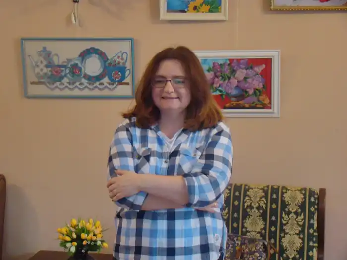

Народилася 1983 року в Києві, де мешкає й надалі. Від 1996 року пише прозові твори.
2005 року закінчила філологічний факультет Київського національного університету ім. Т. Г. Шевченка з відзнакою.
Брала участь у "Творчій майстерні" Володимира Арєнєва. Написала роман-фентезі для підлітків "Місто Тіней" ("Фонтан казок", 2016), твір отримав відзнаку "Дебют року у прозі" (рейтинг-топ БараБуки 2016). Лауреатка літературних конкурсів: "Проліт фантазії" (2015, оповідання "Адам") "Коронація слова" (2016, за найкращий прозовий твір для дітей середнього шкільного віку). Здобула Корнейчуковську премію-2016 — за найкращий прозовий твір для дітей старшого віку та юнацтва. Переможець літературного конкурсу "Напишіть про мене книжку"-2016 (видавництва "Фонтан казок"). Її твори виходять друком у періодиці, альманахах, окремими виданнями. Перекладає з французької мови, шортлістер перекладацької премії "Метафора" (2016). Серед перекладів: казка Марджері Вільямс "Вельветовий кролик, або як оживають іграшки"("Час майстрів", 2016) 2 томи роману Тімоте де Фомбеля "Тобі Лолнесс" ("Час майстрів", 2016).